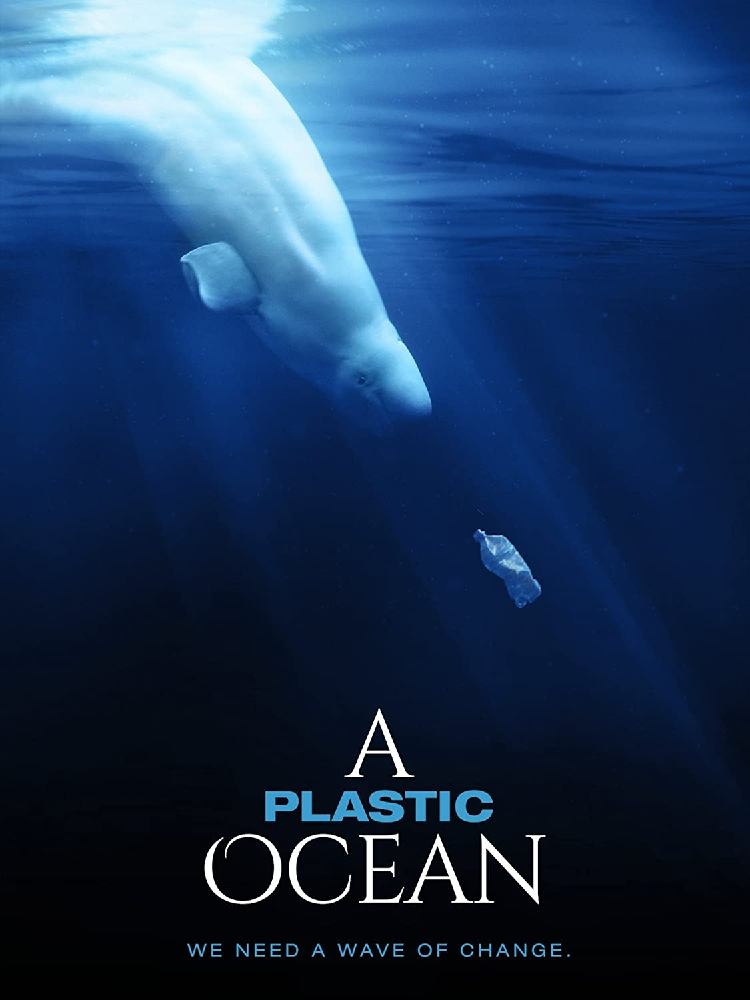

<section class="sugestao">
    
    <div class="sugestao-corpo">
        <div class="sugestao__texto">
            <h2>Oceanos de Plástico</h2>
            <p>2016 | 10 | 1h 40min | Documentário</p>
            <p>'A Plastic Ocean" começa quando o jornalista Craig Leeson, à procura da indescritível baleia azul, descobre resíduos plásticos no que deveria ser o oceano imaculado. Neste documentário de aventura, Craig se junta à mergulhadora livre Tanya Streeter e uma equipe internacional de cientistas e pesquisadores, e eles viajam para vinte locais ao redor do mundo nos próximos quatro anos para explorar o estado frágil de nossos oceanos, descobrem verdades alarmantes sobre a poluição de plástico e revelam soluções que podem ser postas em efeito imediato.</p>
        </div>
        
    </div>
</section>